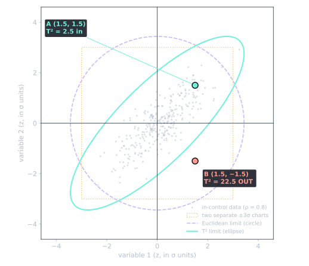
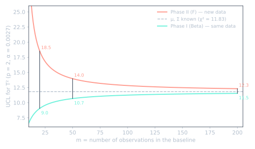

문제
두 품질 특성이 함께 움직이는 경우가 있습니다. 예를 들어 같은 오염원에서 오는 불순물 두 가지입니다. 이럴 때 변수마다 관리도를 따로 보면 놓치는 것이 생깁니다. 변수 1로 봐도 정상, 변수 2로 봐도 정상인데, 두 값의 조합은 공정이 건강할 때 나오지 않는 경우입니다. 이걸 잡으려면 한 점이 두 변수의 결합 분포 중심에서 얼마나 떨어져 있는지를 숫자 하나로 나타내야 합니다. 이 글은 그 숫자를 세 단계로 만들어 갑니다.
1단계: 유클리드 거리와 그 한계
가장 먼저 떠오르는 것은 중심에서의 직선거리, 즉 직각삼각형의 빗변입니다.
d² = (x₁ − μ₁)² + (x₂ − μ₂)²이 거리에는 사각지대가 두 개 있습니다.
- 스케일. 단위에 따라 값이 바뀝니다. ppm 단위 변수가 ppt 단위 변수보다 숫자가 크다는 이유만으로 거리를 지배합니다.
- 상관관계. 모든 방향을 같은 무게로 재기 때문에 관리 경계가 원이 됩니다. 평소 상관 방향을 따라 움직인 점과 상관을 거슬러 움직인 점이 같은 거리로 계산됩니다.
중요한 것은 두 번째입니다. 유클리드 거리는 얼마나 멀리 떨어졌는지는 알려주지만, 그 조합이 정상적인지는 알려주지 못합니다.
2단계: 마할라노비스 거리
P. C. Mahalanobis가 1936년에 제안한 거리입니다. 행렬로 쓰면 다음과 같습니다.
D² = (x − μ)ᵀ Σ⁻¹ (x − μ)변수가 두 개일 때 풀어 쓰면 읽기 쉽습니다. 먼저 각 변수를 표준화합니다. zi = (xi − μi) / σi. 이것으로 스케일 문제가 사라집니다. 그러면:
D² = ( z₁² − 2ρ·z₁·z₂ + z₂² ) / (1 − ρ²)상관관계가 작동하는 곳은 가운데 항 −2ρ·z₁·z₂입니다. 두 변수가 보통 함께 오르내리는 ρ > 0인 경우를 보겠습니다.
- 같은 방향으로 이탈(z₁과 z₂의 부호가 같음): z₁z₂ > 0이므로 이 항이 빠지고 거리가 작아집니다. 공정에서 늘 나오는 조합입니다.
- 반대 방향으로 이탈: z₁z₂ < 0이라 마이너스끼리 곱해져 이 항이 더해지고, 거리가 커집니다.
1/(1 − ρ²) 배율은 상관이 강할수록 이 효과를 키웁니다. 변수들이 서로 상관이 없고 분산이 1이면 Σ는 단위행렬이 되고, D²는 다시 유클리드 거리와 같아집니다.
| 점 (ρ = 0.8) | z₁, z₂ | 유클리드 d² | 마할라노비스 D² |
|---|---|---|---|
| 같은 방향 | +1, +1 | 2 | (1 + 1 − 1.6) / 0.36 = 1.1 |
| 반대 방향 | +1, −1 | 2 | (1 + 1 + 1.6) / 0.36 = 10.0 |
유클리드 거리는 같은데, 마할라노비스 거리는 아홉 배 차이가 납니다.
3단계: Hotelling T²
실제로는 μ와 Σ를 모르기 때문에 기준 데이터에서 추정합니다. 표본평균 벡터 x̄와 표본공분산 행렬 S입니다. 이것을 넣으면 Hotelling T²(Hotelling, 1947)가 됩니다.
T² = (x − x̄)ᵀ S⁻¹ (x − x̄)즉 T²는 추정한 모수로 계산한 마할라노비스 거리의 제곱입니다. 크기 n인 부분군의 평균을 쓸 때는 같은 식에 n을 곱합니다.
T² 값이 같은 점들은 중심을 둘러싼 타원 위에 놓입니다. T²가 관리상한과 같아지는 타원이 흔히 말하는 "럭비공"입니다. 타원의 기울기는 상관관계에서, 장축과 단축의 길이는 각 방향의 분산에서 나옵니다.

이 글에서 말하는 경우가 점 B입니다. 관리도 두 개로 따로 보면 둘 다 ±3σ 안이고 유클리드 원 안에도 있지만, T²는 22.5로 한계 11.8을 넘습니다. 타원만 이 점을 잡아냅니다.
타원은 변수가 두 개일 때만 그릴 수 있습니다. 실제로 쓰는 관리도는 Shewhart 형식입니다. 시간 순서대로 T²를 찍고 관리상한 하나와 비교합니다. 거리의 제곱은 음수가 될 수 없으므로 관리하한은 보통 두지 않습니다.
관리상한 정하기
관리상한은 무엇을 알고 있느냐에 따라 달라서, 세 가지 경우로 나뉩니다. p는 변수 수, m은 기준 데이터의 개별 관측치 수입니다.
| 상황 | 분포 | UCL (개별 관측치) |
|---|---|---|
| μ와 Σ를 알 때 | χ² | χ²α, p |
| Phase I: 기준 데이터로 한계를 정하고, 같은 기준 데이터를 평가 | Beta | ((m − 1)² / m) · B1−α/2; p/2, (m−p−1)/2 |
| Phase II: 기준 데이터로 한계를 정하고, 새 데이터를 평가 | F | [p(m + 1)(m − 1) / (m² − mp)] · Fα; p, m−p |
개별 관측치용 Phase I과 Phase II 식은 Tracy, Young, Mason(1992)의 것으로, NIST 핸드북에 실린 형태를 따랐습니다. NIST의 Phase I 식은 관리하한도 함께 제시하기 때문에 α/2를 씁니다.
분포가 세 가지인 이유
자를 만들고, 그 자로 재는 상황에 비유할 수 있습니다.
- χ²: 정답지를 가지고 있을 때. 진짜 평균과 공분산을 알기 때문에 자가 정확합니다. 공장에서는 드문 경우이고, 주로 나머지 두 경우가 다가가는 기준점 역할을 합니다.
- Phase I, Beta: 자를 만든 사람들을 그 자로 재기. 평가받는 점이 x̄와 S를 추정하는 데 이미 참여했고, 추정값을 자기 쪽으로 조금 끌어당겼습니다. 그래서 실제보다 덜 튀어 보이고, 한계가 좁아집니다. 목적은 기준 데이터를 깨끗하게 만드는 것입니다.
- Phase II, F: 완성된 자로 새로 온 사람 재기. 새 점은 추정에 참여하지 않았습니다. 대신 자 자체가 m개 점으로 만든 추정치라서 오차가 있습니다. 그 오차를 감안해 한계가 넓어집니다. 식의 (m + 1) 항이 이 역할을 합니다.

| m | Phase I (Beta) | χ² | Phase II (F) |
|---|---|---|---|
| 20 | 9.05 | 11.83 | 18.54 |
| 50 | 10.68 | 11.83 | 13.97 |
| 200 | 11.54 | 11.83 | 12.31 |
p = 2, α = 0.0027(3σ 상당). 같은 조건에서 비교하려고 여기서는 Phase I도 한쪽 1 − α 분위수를 썼습니다. 기준 데이터가 적으면 세 한계가 크게 벌어집니다. m이 커지면 추정값이 참값에 가까워져 세 값 모두 χ² 값으로 모입니다.
실무에서 주의할 점
- 신호가 나와도 어느 변수 때문인지는 알 수 없습니다. T²는 숫자 하나입니다. 원인을 찾으려면 분해해야 합니다. 예를 들어 Mason–Tracy–Young(MYT) 분해는 T²를 변수별 항과 조건부 항으로 나눕니다.
- 모든 것을 T²로 보지 마세요. 변수 하나에만 생긴 shift는 그 변수의 관리도가 대개 더 빨리, 더 알기 쉽게 잡습니다. 단변량 관리도는 함께 유지하는 것이 좋습니다.
- 중복된 변수가 있으면 계산이 안 됩니다. 두 변수가 완전히 상관되어 있거나 한 변수가 다른 변수들의 합이면 S의 역행렬을 구할 수 없습니다. 중복된 변수는 빼야 합니다.
- 다변량 정규분포를 가정합니다. 검출한계 근처의 미량 분석 결과는 치우쳐 있거나 검출한계 미만 값이 섞여 있는 경우가 많습니다. 한계를 믿기 전에 분포를 확인하고, 로그 변환을 검토하세요.
정리
- 유클리드 거리는 얼마나 먼지를 잽니다. 마할라노비스 거리는 그 조합이 정상인지도 봅니다.
- T²는 평균과 공분산을 추정해서 계산한 마할라노비스 거리의 제곱입니다.
- 정답지가 있으면 χ², 같은 데이터를 재면 Beta(좁게), 새 데이터를 재면 F(넓게). 기준 데이터가 충분히 많으면 셋이 만납니다.
만든 방법
AI 도우미(ChatGPT, 이어서 Claude)와 대화하며 내용을 정리했습니다. 그다음 모든 식을 NIST/SEMATECH e-Handbook과 아래 논문에 대조했고, 표와 그림의 숫자는 모두 파이썬(SciPy)으로 직접 계산했습니다. 그림의 데이터는 가상 데이터입니다.
참고문헌
- P. C. Mahalanobis, "On the generalised distance in statistics", Proceedings of the National Institute of Sciences of India, 1936, 2(1), 49–55.
- H. Hotelling, 1947. NIST, Hotelling control charts (6.3.4.1)에서 재인용.
- N. D. Tracy, J. C. Young, R. L. Mason, "Multivariate Control Charts for Individual Observations", Journal of Quality Technology, 1992, 24(2), 88–95. doi:10.1080/00224065.1992.12015232
- R. L. Mason, N. D. Tracy, J. C. Young, "Decomposition of T² for Multivariate Control Chart Interpretation", Journal of Quality Technology, 1995, 27(2), 99–108. doi:10.1080/00224065.1995.11979573
- NIST/SEMATECH e-Handbook, 개별 관측치 관리도 Phase I (6.5.4.3.3), Phase II (6.5.4.3.4).
- JMP Help, Statistical details for individual observations.